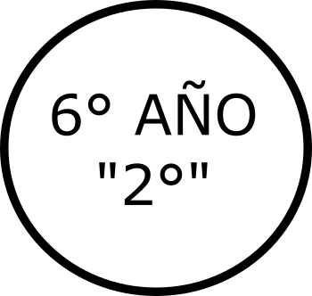

Escuela de Educación Secundaria N°1
Chascomús, Buenos Aires
___Ir a:
___Biblioteca
___Centro-Estudiantes___
As.Cooperadora___
Docentes___
home
__Volver a Inicio
Biblioteca
Centro-Est
As.Cooper.
Docentes
home
TRABAJOS PRÁCTICOS DE:
ARTE
TRABAJOS AÑO 2021:
ARTE - VIDEO: Cinco pinturas y una película para entender a Picasso
Accederás a YouTube: Reportajes, "Cinco pinturas y una película para entender a Picasso"
MARZO 2021 - ARTE - Trabajo Práctico N° 1
Descargar archivo en página nueva
argentina.gob.ar - PLANTAMOS MEMORIA EN LOS PARQUES NACIONALES
Accederás al sitio: argentina.gob.ar
LOS NOMBRES DE LAS LISTAS NEGRAS DE LA DICTADURA
Accederás al sitio: infobae.com
24 de marzo de 2021 - 45 Años del Golpe de Estado
Accederás al sitio: comisionporlamemoria.org
MARZO 2021 - ARTE - Trabajo Práctico N° 2
Descargar archivo en página nueva
MARZO 2021 - ARTE - Trabajo Práctico N° 3
Descargar archivo en página nueva
Video Complemento de Trabajo Práctico N° 4
Accederás a YouTube
Bibliografía de apoyo para el Trabajo Práctico N° 4
Accederás al Sitio de "Luis Felipe Noé"
Bibliografía de apoyo para el Trabajo Práctico N° 4
Accederás al Sitio de "La Nación/Cultura"
Bibliografía de apoyo para el Trabajo Práctico N° 4
Accederás al Sitio "Historia Hoy"
MARZO 2021 - ARTE - Trabajo Práctico N° 4
Descargar archivo en página nueva
ARTE - Trabajo Práctico N° 5
Descargar archivo en página nueva
-ARTE: ELEMENTOS COMPOSITIVOS -
Accederás a YouTube
-ARTE: ELEMENTO BASICOS DE LAS ARTES: El punto y ritmo visual -
Accederás a YouTube
ARTE - Trabajo Práctico N° 6
Descargar archivo en página nueva
-ARTE: VIDEO "Mujeres 1: Violencia de Género" -
Accederás a YouTube
-ARTE: VIDEO "No se nace feminista" -
Accederás a YouTube
ARTE - Trabajo Práctico N° 7
Descargar archivo en página nueva
-ARTE: VIDEO "70 Million by Hold Your Horses (OFFICIAL MUSIC VIDEO)" -
Accederás a YouTube
Arte - Trabajo Práctico INTEGRADOR
Descargar archivo en página nueva
Volver a: MATERIAS